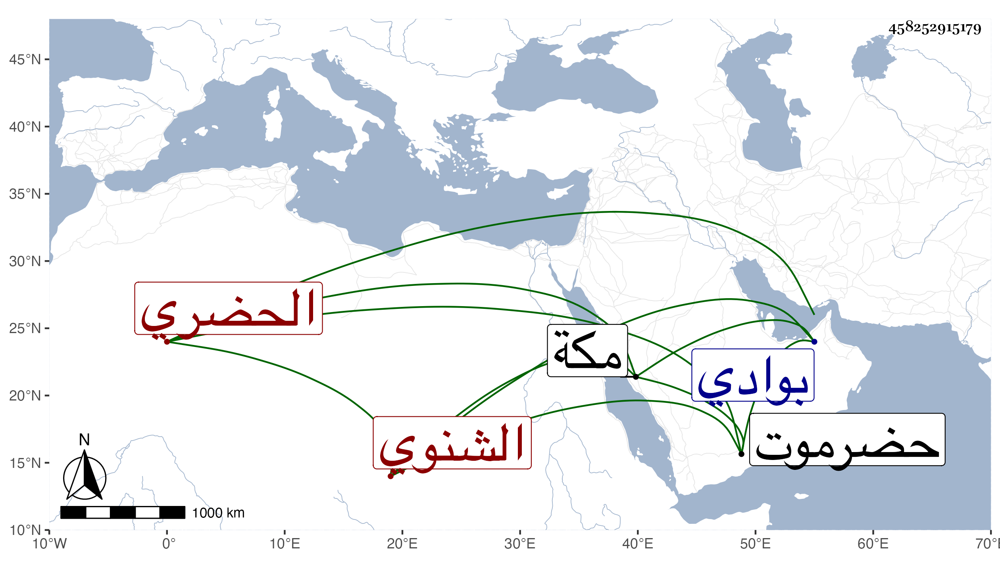

0902Sakhawi.DawLamic.ITO20230111-ara1.EIS1600.458252915179
Biography ID: 458252915179
193
عبد الله بن محمد بن عبد الرحمن بن سالم بن محمد بريك الحضري من بني سيف ثم الشنوي . ولد بوادي حضرموت في رمضان سنة إحدى عشرة وهو من بيت دين وصلاح وعبادة لأهل حضرموت فيهم اعتقاد يقال لهم بنو بريك وله في نفسه سلوك . ذكره المقريزي في عقوده هكذا وأنه قدم في مجاورته بمكة سنة تسع وثلاثين فسمع عليه قطعة من صحيح مسلم وأشياء بل قرأ علي شيئا من كتب التصوف وكتبت له شيئا في كيفية السلوك وأخبرني أنه وجد في شنوة من وادي حضرموت قبر فيه إنسان ذرعوا ما بين كعبه إلى ركبتيه فكان طول عظم ساقه ثلاثة عشر ذراعا إلى غير ذلك من أخبار أودعتها في جزء في غرائب أخبار وادي حضرموت انتهى .
